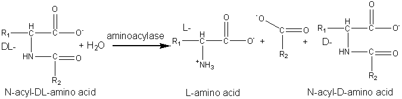

|
|
Production of amino acidsAnother early application of an immobilised enzyme was the use of the aminoacylase from Aspergillus oryzae to resolve racemic mixtures of amino acids.  L -amino acid + N -acyl -D -amino acid" width="675" height="167"> [5.4] Chemically synthesised racemic N-acyl-DL-amino acids are hydrolysed at pH 8.5 to give the free L-amino acids plus the unhydrolysed N-acyl-D-amino acids. These products are easily separated by differential crystallisation and the N-acyl-D-amino acids racemised chemically (or enzymically) and reprocessed. The enzyme is immobilised by adsorption to anion exchange resins (e.g., DEAE-Sephadex) and has an operational half-life of about 65 days at 50°C in PBRs with residence times of about 30 min. The reactors may be re-activated in situ by simply adding more enzyme. The immobilised enzyme has proved a more economical process than the use of free enzyme mainly due to the more efficient use of the substrate and reductions in the cost of enzyme and labour. Novel and natural L-amino acids can be produced by the chemical conversion of aldehydes through DL-amino nitrites to racemic DL-hydantoins (reaction scheme [5.5]) followed by enzymic hydrolysis with hydantoinase and a carbamoylase (reaction scheme [5.6]) at pH 8.5. Both enzymes may be obtained from Arthrobacter species. D -Amino acids are important constituents in antibiotics and insecticides. They may be produced in a manner similar to the L-amino acids but using hydantoinases of differing specificity. The Pseudomonas striata enzyme is specific for D-hydantoins, allowing their specific hydrolysis to D-carbamoyl amino acids which can be converted to the D-amino acids by chemical treatment with nitrous acid. They remaining L-hydantoin may be simply racemised by base and the process repeated. L -Aspartic acid is widely used in the food and pharmaceutical industries and is needed for the production of the low -calorific sweetener aspartame. It may be produced from fumaric acid by the use of the aspartate ammonia-lyase (aspartase) from Escherichia coli. aspartate ammonia-lyase A crude immobilised aspartate ammonia-lyase (50000 U g−1) may be prepared by entrapping Escherichia coli cells in a k -carageenan gel crosslinked with glutaraldehyde and hexamethylenediamine. The process is operated in a PBR at pH 8.5 using ammonium fumarate as the substrate, with a reported operational half-life of 680 days at 37°C. Urocanic acid is a sun-screening agent which may be produced from L-histidine by the histidine ammonia -lyase (histidase) from Achromobacter liquidum (see reaction scheme [1.4]). The organism cannot be used directly as it has urocanate hydratase activity, which removes the urocanic acid. However, a brief heat treatment (70°C, 30 min) inactivates this unwanted activity but has little effect on the histidine ammonia-lyase. A crude immobilised-enzyme preparation consisting of heat -treated cells entrapped in a polyacrylamide gel has been used to effect this conversion, showing a half-life of 180 days at 37°C.
This page was established in 2004 and last updated by Martin
Chaplin |